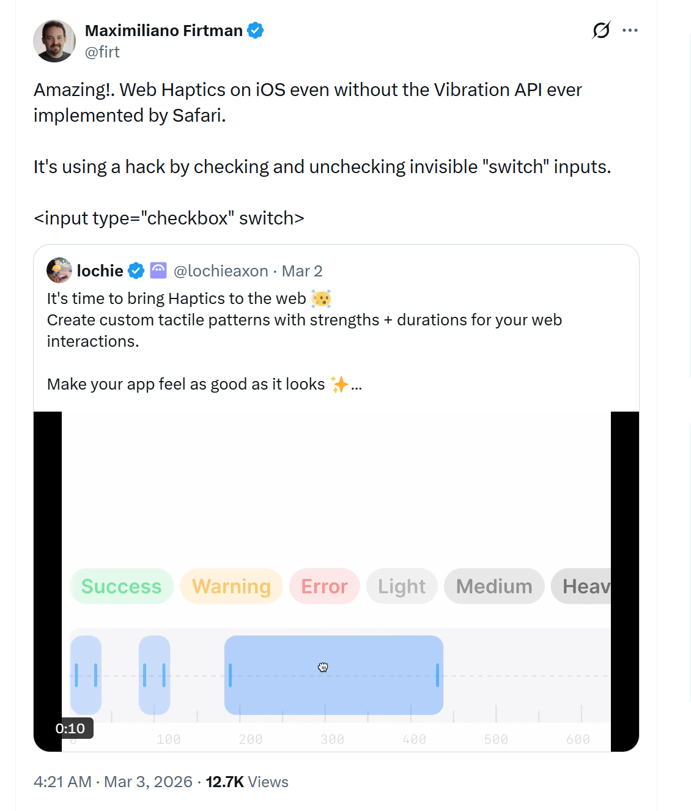

How many of you noticed haptic feedback
on your phone today?
Pull down to refresh
Toggle a switch
Set an alarm
Every tap feels flat. Toggles give no confirmation.
Scrolling through a picker feels like dragging a div.
That tactile layer is invisible until it's missing.
The web barely has any of this.
These same interactions on the web? Very likely no haptics.
The only tool available today:
navigator.vibrate([200, 100, 200]);Haptic hardware today
Phones
⚠️ vibrate() — no iOS/WebKit
Trackpads
MacBook · Surface
❌ No web API
Mice
Gaming · productivity
❌ No web API

navigator.vibrate()<input switch> fires a system haptic on toggleFour semantic effects — hint · edge · tick · align — with optional intensity (0.0–1.0).
Both paths target the most recent input device — if not haptics-capable, no-op (no rerouting).
button:active {
@haptic align 0.8;
}Nested at-rule fires when parent selector starts matching.
No JavaScript needed.
navigator.playHaptics('align', 0.8);For interactions that need runtime logic.
Requires sticky user activation.
| Effect | Description | When to use |
|---|---|---|
hint |
Light, subtle cue | Focusing an input, entering a drop zone |
edge |
Heavy boundary signal | Validation failure, scroll hitting boundary |
tick |
Firm discrete pulse | Scroll-snap landing, toggling a switch |
align |
Crisp lock-into-place | Drag-to-snap, window snap, zoom to 100% |
intensity: normalized 0.0–1.0 · effective = system setting × developer value
navigator.playHaptics(effect, intensity);effect: "hint" | "edge" | "tick" | "align"intensity (optional): 0.0–1.0, defaults to 1.0undefined — no device info leakage<selector> {
/* visual declarations */
@haptic <effect-name> <intensity>?;
}classList.add()) require sticky user activation@keyframes for multi-step haptic choreographyTactile confirmation on button press — zero JavaScript:
.add-to-cart:active {
scale: 0.95;
@haptic align 0.8;
}A tick each time a photo snaps into view, using :snapped from CSS Scroll Snap 2:
.carousel > .photo:snapped {
@haptic tick 0.5;
}CSS can't express distance-threshold logic — imperative API:
divider.addEventListener('pointermove', (e) => {
const width = e.clientX;
if (!snapped && Math.abs(width - SNAP_POINT) < 4) {
snapped = true;
navigator.playHaptics?.('align', 0.8);
} else if (snapped && Math.abs(width - SNAP_POINT) >= 4) {
snapped = false;
}
});Slack
prefers-haptics media feature — coarse user preference signalexit / both in addition to enter-only (e.g. haptic on sidebar open and close)Haptics are one-shot, fire-and-forget — not ongoing state. We evaluated five models:
| Model | Syntax | Syntax–semantics match | Co-located | Concise | Re-trigger safe |
|---|---|---|---|---|---|
A. Nested @haptic proposed |
button:active { scale: .95; @haptic align; } |
✅ says "haptic" | ✅ | ✅ | ✅ per-rule tracking |
B. Standalone @haptic-trigger |
@haptic-trigger button:active { effect: align; } |
✅ says "haptic" | ❌ separate block | ❌ two blocks | ✅ per-rule tracking |
| C. Computed-value property | button:active { haptic-feedback: align; } |
❌ looks like state | ✅ | ✅ | ❌ value collision |
| D. Animation-trigger | @haptic tap { effect: align; } |
❌ looks like state | ⚠️ split | ❌ define+attach | ⚠️ unique names |
| E. Transition-coupled | .btn { transition: scale 0ms; |
⚠️ natural with transition | ✅ | ❌ needs fake transition | ⚠️ dummy props |
Syntax–semantics match = dev sees syntax, matches intuition · Co-located = haptic in same rule block · Concise = minimal syntax · Re-trigger safe = same effect fires from distinct state changes
Q: Which tradeoffs best serve developers? Should nested @haptic anchor standardization?
These are open questions in the explainer — happy to dive into any of these or wherever the conversation goes.
hint, edge, tick, align the right four? Do they map well to native primitives?:snapped dependencyscroll-snap-haptic fallback property?playHaptics return success?Illustrative — user agents may choose different mappings.
| Web | Windows | macOS | iOS | Android |
|---|---|---|---|---|
hint | hover | generic | light impact | gesture_threshold_deactivate |
edge | collide | generic | soft impact | long_press |
tick | step | generic | selection | segment_frequent_tick |
align | align | alignment | rigid impact | segment_tick |
navigator.vibrate() — bolting semantic effects onto a pattern-based API is awkward; feature detection breaks; carries abuse stigma